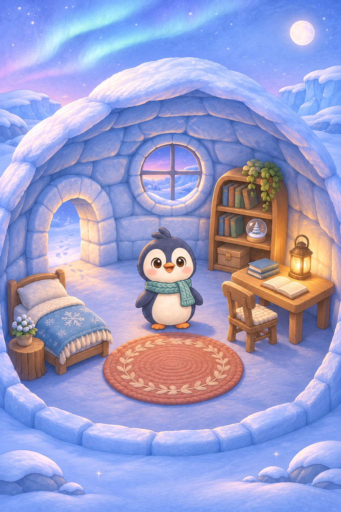
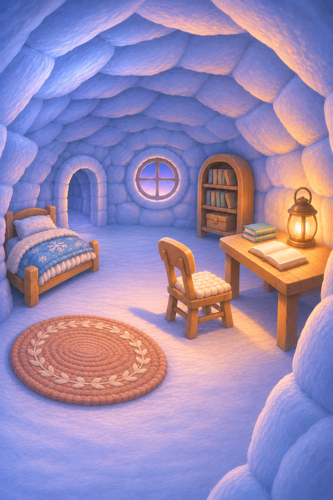

From concept layout to inhabitable room
Study 2 established the furniture arrangement. The refined master keeps that foundation and changes the room shell, camera, and floor composition to support a character moving through the space.
Original direction · Study 2
Hand-painted isometric concept

Refined master · architecture plate
Oblique enclosed interior

Room depthOblique camera, visible side returns, and ceiling curvature replace the exterior-rim framing.
NavigationBed, shelf, desk, and chair are pushed toward the walls; the near-center floor remains open.
2.5D readinessChair is treated as separate back, seat, and front-leg depth slices so it can cover the penguin selectively.
Both images are 1024 × 1536. The refined painting is still a flattened concept master; see the editable room-space and depth plan and the prompt/source record.